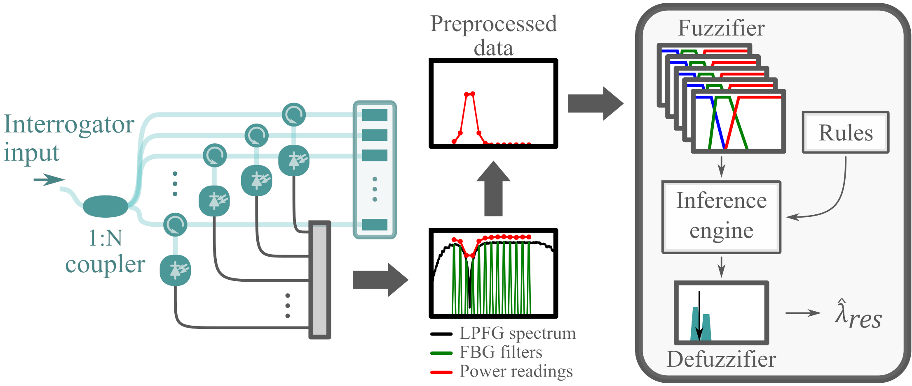
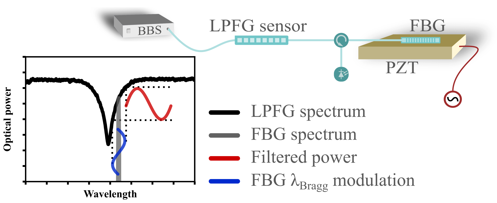
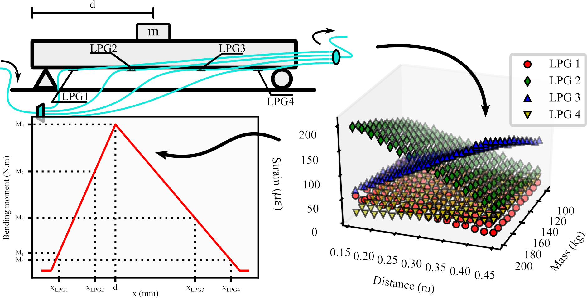

Publications
2024
-

Addressing Uncertainty on Machine Learning Models for Long-Period Fiber Grating Signal Conditioning Using Monte Carlo Method
Abstract: The massive adoption of machine learning (ML) and artificial intelligence models in the field of instrumentation and measurement has raised several doubts concerning the validity of their response and the methodology for estimating their errors. In this study, we revisit ML models that were used to interrogate long-period fiber grating sensors. We used these models to present a comprehensive analysis of the uncertainty propagation through the ML-based optical fiber sensor signal conditioning. The uncertainty propagation was studied using the Monte Carlo method. The results showed the proposed models were capable to damp some optoelectronic noises, don’t induce systematic errors under noise, and that the noise-damping effect of the ML models doesn’t impact the interrogator’s resolution. Moreover, we hope that this work serves as a methodological framework for the evaluation of uncertainty of ML-based optical sensor interrogators.
-
Novel beer bitterness measurement instrument using optical fiber sensor
Abstract: This paper presents a novel optical fiber sensor for measuring the bitterness of beer samples. The sensor is based on a Mach–Zehnder interferometer (MZI) composed of two long-period fiber gratings (LPFGs). The sensor exploits the sensitivity of the LPFGs to the refractive index of the surrounding medium, which varies according to the concentration of iso-alpha-acids that cause bitterness in beer. The sensor uses a two-point on-line self-calibrating procedure to estimate the bitterness of unknown samples by comparison with reference samples of known bitterness. The sensor performance was evaluated in both laboratory and factory settings, showing good repeatability, reproducibility, and low bias. The proposed sensor offers a fast, simple, and low-cost alternative to the conventional method of measuring beer bitterness based on UV spectroscopy. The sensor can be integrated into the Industry 4.0 framework to improve the quality and consistency of beer production.
-
Hydroelectric Plant Safety: Real-Time Monitoring Utilizing Fiber-Optic Sensors
Abstract: In the context of hydroelectric plants, this article emphasizes the imperative of robust monitoring strategies. The utilization of fiber-optic sensors (FOSs) emerges as a promising approach due to their efficient optical transmission, minimal signal attenuation, and resistance to electromagnetic interference. These optical sensors have demonstrated success in diverse structures, including bridges and nuclear plants, especially in challenging environments. This article culminates with the depiction of the development of an array of sensors featuring Fiber Bragg Gratings (FBGs). This array is designed to measure deformation and temperature in protective grids surrounding the turbines at the Santo Antônio Hydroelectric Plant. Implemented in a real-world scenario, the device identifies deformation peaks, indicative of water flow obstructions, thereby contributing significantly to the safety and operational efficiency of the plant.
-

Monitoring and Characterization Technology for Coffee Fermentation Aromas: A Data-Driven Approach
Abstract: The coffee fermentation process is a crucial step in the production of high-quality coffee. However, the traditional methods of monitoring the fermentation process are subjective, expensive, and time-consuming. In this study, we developed a novel approach using electronic CO2 and temperature sensors, combined with a 3D-printed encapsulation, to monitor and characterize the coffee fermentation process. Our methodology involved the following steps: Development of a sensor probe for aroma characterization during the coffee fermentation process, implementation of a robust data processing pipeline, including clustering techniques and Principal Component Analysis, to effectively identify and classify aromas, collection of data from the sensor probe throughout the fermentation process, analysis of the collected data to identify patterns and trends that correlate with different stages of the fermentation process. The results of our study demonstrate that our proposed approach is an effective and reliable tool for monitoring and characterizing the coffee fermentation process. Our findings suggest that the use of electronic sensors and data processing techniques has the potential to significantly improve the quality and efficiency of coffee production.
-

Enhanced aroma prediction in coffee fermentation through optical fiber sensor data fusion
Abstract: This study presents the development of a monitoring probe for characterizing aromas during the coffee fermentation process. Using an optical device created through a Twin Long Period Fiber Grating interferometer in conjunction with auxiliary measurements of carbon dioxide and temperature, the probe was designed to capture relevant data throughout the fermentation process. A set of analyses were conducted, examining carbon dioxide levels, temperature, and spectral analysis, to effectively identify and classify aromas. The results demonstrate that the developed device proved to be a promising tool for monitoring and characterizing the coffee fermentation process. Furthermore, this work opens perspectives for the application of sensors and monitoring techniques in industrial processes, with the potential to enhance quality and efficiency in agro-industry.
-
Carbon Dioxide Optical Sensing using Tapered and Coated LPGs and Neural Networks
Abstract: This work presents the development of a refractive index sensing methodology for measuring carbon dioxide concentrations, considering the effect of temperature environment. We propose and demonstrate, using simulations, the use of tapered and coated Long-Period Gratings as a way to enhance the refractive index sensitivity. In addition, artificial neural networks were used to improve the estimation of carbon dioxide concentration, considering the cross-sensitivity effect with temperature.
2023
-

In-fiber Mach–Zehnder interferometer as a promising tool for optical nose and odor prediction during the fermentation process
Abstract: In this paper, we present an in-fiber Mach-Zehnder interferometer (MZI) applied to coffee beans fermentation monitoring. Two MZIs, based on the combination of a fiber taper cascaded by a micro-tapered long-period fiber grating, were installed in a fermentation barrel to monitor the liquids and gases released during the fermentation process. During this process, a variety of odors rises due to the yeast activity and its classification is important to decide when to stop the fermentation process. In this work, we show that the in‑fiber MZIs are good candidates for optical noses in this scenario.
2022
-

A fuzzy approach to LPFG-based optical sensor processing and interrogation
Abstract: In this work we report on a new interrogation method for Long-period fiber grating (LPFG) sensors. This type of sensor has been gaining increasing attention due its several interesting practical and metrological advantages. However, the LPFG optical signal is complex and could be difficult to process. We present a novel approach to the LPFG resonant wavelength detection and tracking using a multi-filter LPFG interrogator. Multi-filter LPFG interrogators present a great solution for LPFG sensor interrogation because there is no need for a priori knowledge concerning the LPFG sensor spectrum. We present a novel source-compensating preprocessing and a fuzzy inference system to track the LPFG resonant wavelength. Our proposal was compared to two baseline models: a simple linear regression and an artificial neural network. Our results showed the new approach could reduce resonant wavelength uncertainty by almost three times comparing to results found in the literature.
-

3d-printed force sensitive structure using embedded long-period fiber grating. In: Optics and laser technology
Abstract: In this work, we present a low-cost tactile sensor based on arc-induced long–period fiber grating (LPG) embedded in polylactic acid (PLA) by fused deposition modeling (FDM). The 3d printing process used to embed the LPG, offers easy customization, flexibility, fast prototyping, and low-cost fabrication. At the same time, optical fiber sensors such as fiber Bragg gratings (FBGs) and LPGs are compact, resistant, and immune to electromagnetic interference. Therefore, the easy fabrication and low cost of arc-induced LPGs coupled to the 3d printing advantages offer low-cost custom force sensing elements with all the advantages of optical fiber sensors. This way, the proposed tactile sensor is a lightweight, small-size, and cost-effective tactile sensing scheme that offers easy implementation and tailoring to specific applications. In this study, we fabricated, embedded, calibrated, and evaluated the proposed LPG sensor tactile sensor. We showed this approach provided high force sensitivity (11.723 nm.N−1) with high linearity (99.28 %), sub-decimal measurement error, and no drift.
-

Long-period fiber grating sensor interrogation with single strain modulated FBG and harmonic analysis
Abstract: Optical fiber sensors have been used in several applications due to their unique advantages, such as immunity to electromagnetic interference, small size, light-weight, and robustness, for example. Long-period fiber grating (LPFG) is a type of fiber sensor with great sensitivity to several parameters, including the surrounding refractive index. However, the challenge in using LPFGs lies in their interrogation, which relates the change in optical characteristics with the measurand. This paper presents a novel method for the interrogation of LPFG sensors. This method uses a single FBG attached to a vibrating piezoelectric component and harmonic analysis of the optical power reflected by the FBG filter to estimate the resonant wavelength of an LPFG. The method was simulated to process several arc-induced LPFG spectra and achieved results comparable to the baseline method for half of the test set and improved by roughly 5 times the accuracy and precision by limiting the dynamic range.
2021
-
Two-dimensional long-period fiber grating sensor for touch applications
Abstract: In this study we present a two-dimensional force sensor based on a single long-period fiber grating (LPG) to be applied to robotic manipulators grasping control. The measuring force is applied to the fiber transverse section and this lateral compression induces birefringence on the fiber, which splits the LPG resonant dip into two. We track these dips using polarized controlled light and process the LPG spectra using artificial neural networks to determine the force intensity and direction. Finally, our single sensor proposal for 2D forces measurement can estimate an applied force with 0.2148 N and 5.977 deg. error.
-

Loading Condition Estimation Using Long-Period Fiber Grating Array
Abstract: To ensure the safety and durability of structures, the constant monitoring of their structural health has been used by engineers to manage these structures. Optical fiber sensors have the advantage of long transducer-to-processing distances, the capacity to work in harsh environments, immunity to electromagnetic noise, and reliability. Therefore, optical fiber sensors are great candidates to monitor structures in-service. Here, we propose the use of a long-period fiber grating (LPG) array to monitor the loading condition of a structure. The identification method was tested in a simply-supported beam model and the estimated loading conditions were compared to the loading conditions applied to the beam. By analyzing different combinations of force intensity and position along the beam length, the results showed the force position could be estimated with 0.901% accuracy and force intensity with 2.51% accuracy using a four-LPG strain sensor array.
2020
-

LPG Interrogator Based on FBG Array and Artificial Neural Network
Abstract: This work introduces a new method for long-period fiber grating (LPG) sensors interrogation. This proposal uses a fiber Bragg grating (FBG) array to extract spectral information of the LPG sensor and an Artificial Neural Network to process this information. The information is processed to estimate the LPG resonant wavelength, without prior knowledge on the LPG spectrum. Therefore, the interrogator is LPG-insensitive, can be easily manufactured by optical fiber sensors laboratories at low-cost and is suitable for in-field applications. We demonstrated the filter array and Multilayer Perceptron (MLP) design, which are the proposed interrogator core. Furthermore, we analyzed the interrogation performance by the Mean Squared Error (MSE), the Mean Absolute Error (MAE), and the distribution of the residuals. The results showed our proposal can estimate the LPG resonant wavelength with 2.82 nm uncertainty, considering a 95% confidence interval, over 75 nm dynamic range for several LPGs, with different spectral characteristics. Moreover, our proposal can be easily tailored for different dynamic ranges and resolutions with proper adjustments on the FBG array and MLP.
-
Transverse Load Discrimination in Long-Period Fiber Grating via Artificial Neural Network
Abstract: We present a general investigation of a Long-Period Grating (LPG) for transverse strain measurement. The transverse strain sensing characteristics, for instance, the load intensity and azimuthal angle, are analyzed with the data set generated by the LPG sensor and probed by artificial neural network (ANN). Furthermore, we evaluate and compare the predictive performance of the interrogation model considering the square correlation coefficient (R2), root mean square error (RMSE) and mean absolute percentage error (MAPE). The results indicate that the ANN model could be successfully employed to estimate the load intensity and azimuthal angle using a single LPG sensor.
-

Correlated Time-Series in Multi-Day-Ahead Streamflow Forecasting Using Convolutional Networks
Abstract: Information about future streamflow is important for hydropower production planning, especially for damless hydro-power plants. The river flow is a reflection of various hydrological, hydrogeological, and meteorological factors, which increases the direct modeling difficulty, and favors the use of data-driven methods. In this paper, we propose the use of one-dimensional convolutional neural networks (1d-CNN) for multi-day ahead river flow forecasting and we present a multi-input model using correlated-input time-series. The proposed model was applied at the Madeira River, the Amazon's largest and most important tributary, near the Santo Antônio damless hydro-power plant. We compared the proposed correlated-input 1d-CNN to a single-input 1d-CNN model and some baseline models. Furthermore, we conclude that 1d-CNN performed better than all baseline models and that the correlated-input forecasting model is 5 times smaller than the single-input equivalent with accuracy improvements.
2019
-
Comparison of regression methods for transverse load sensor based on optical fiber long-period grating
Abstract: In this work, we report the comparison of regression methods in a long-period grating (LPG) for transverse strain measurement. We analyze the transverse strain sensing characteristics, such as load intensity and azimuthal angle, based on the birefringence effect induced in LPG sensor. Therefore, we employ the different orthogonal responses of the grating to develop regression methods, which allow the estimation of the strain behavior of the LPG sensor. The predictive performances of these interrogation models are compared in terms of square correlation coefficient (R2) and root mean square error (RMSE). Finally, the results indicate that the best method to predict load intensity is the Fourth-Degree Polynomial Fit, whereas the artificial neural network (ANN) model could be successfully employed to predict the azimuthal angle.
Master’s thesis
Optical sensors based on LPFGs for structural loading condition estimation.
(Full
text in portuguese)
-
Abstract: To ensure the safety and durability of in service structures, constant monitoring of their structural health has been used by engineers to aid management, decision-making, and maintenance scheduling. In this context, sensing systems are extremely important. This work presents the use of long-period fiber grating (LPFGs) based optical fiber sensors on loading condition estimation. Optical fiber sensors are great candidates to real-time monitoring of structures because they are capable of handling harsh environments, have electromagnetic immunity, and low attenuation. This work shows two force identification scenarios: loading condition estimation at a simply-supported beam and two-dimensional compression force at an optical fiber. The first was accomplished by a mathematical model of the beam and was capable of estimating the force intensity with a relative mean absolute error of 1.22% and 2.51% for its position. Whereas the latter was accomplished by a machine learning data-driven model that estimated the force intensity with relative mean absolute error of 2.19% and 3.93% concerning its direction.